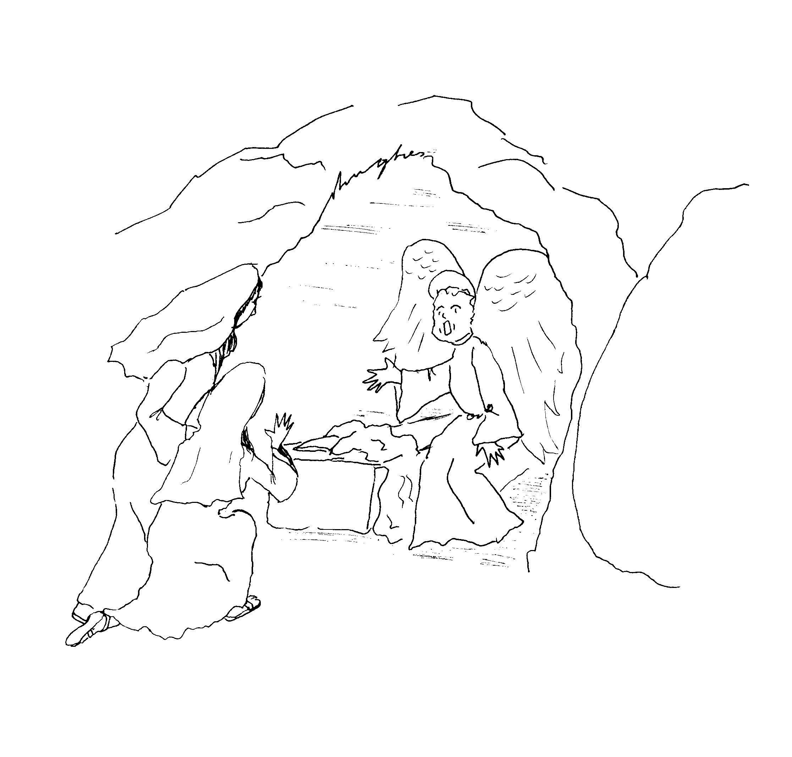

Read the lessons at the Vanderbilt Library website: http://divinity.lib.vanderbilt.edu/lectionary/CEaster/cEasterSun.htm
Read
the lessons at the Vanderbilt Library website:
http://divinity.lib.vanderbilt.edu/lectionary/CEaster/cEasterSun.htm
Elementary School Pew-work
T B A A N T C T R L D O
|
(Luke 24:4-5) While they were perplexed about this, suddenly
two men in dazzling clothes stood beside them. {5} The women were
terrified and bowed their faces to the ground, but the men said
to them, "Why do you look for the living among the dead? He
is not here, but has risen. (NRSV) |
Word List |
from www.geocities.com/lectionarypuzzles/ free to distribute for free with this notice. Words are in a straight line left to right or top to bottom |
||
1. Which women went to Jesus' burial place
_____________________________________________________________
What did the women take with them?
_____________________________________________________________
3.
What did the apostles do when they heard the women's story?
_____________________________________________________________
4.
Who got up and ran to the tomb to see if the story was true?
_____________________________________________________________
